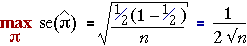

Worst-case standard error
When estimating a population proportion (or probability) π, the corresponding sample proportion p is used as a point estimate. It has standard error

This standard error takes its maximum value when π = 0.5 and this provides a worst-case value for the standard error. Whatever the value of π, the standard error of the estimate will be less than

The diagram below shows the estimated standard error from a sample of size n = 100.
Drag the slider to investigate how the standard error depends on p and observe that it is maximum when p = 0.5. Note also that the resulting confidence interval for π is also widest for this value.
Reporting the accuracy from a survey
In many surveys, a range of probabilities (population proportions) are estimated. In scientific research, it is common to give a 95% confidence interval for each estimate.
However when the results of a survey are presented to the wider public, it is common to simply present point estimates of the probabilities and a single value called the margin of error of the survey. This is the worst-case '±' value for a 95% confidence interval that arises when p = 0.5.

The '±' values of the 95% confidence intervals for all proportions reported in the survey will be less than this value — sometimes considerably less.
The diagram below shows the 95% confidence intervals that would arise from samples of size n = 100 for all possible values of p. Drag the slider to see the widths of the confidence intervals.
Observe that the confidence interval is widest when p = 0.5 and narrowest when p is close to 0 or 1. (Note however that our guidelines on sample size imply that we should not be using this type of confidence interval for n = 100 when p is under 0.05 or over 0.95.)
Select Margin of error from the pop-up menu. Observe that
Example
A numerical example illustrates the use of margin of error in a survey.
Cause of death of kestrels
The table below shows the causes of death of kestrels (a bird of prey) in Britain between 1963 and 1997. (Carcasses were sent to the researchers in response to advertisements in bird-watching magazines and journals and the cause of death was found from information sent by the finder and examination of the carcass.)
| Cause of death | Number of birds | Percentage | ||
|---|---|---|---|---|
| Starvation Trauma Road accident Poison Disease Shot Unknown |
|
|
Although the carcasses examined in the study may not be representative of all kestrel deaths since birds that died in isolated areas would be less likely to be found, we will assume that this data set will be, at least approximately, a random sample from the population of kestrel deaths in more populated areas.
Since the sample size is n = 1473, the margin of error for the survey is 0.026 — i.e. 2.6%.
Since the proportion dying from starvation is close to 1/2, a 95% confidence interval for the probability that a death is by starvation is approximately (39.7 ± 2.6) — a properly calculated confidence interval is (39.7 ± 2.5). However confidence intervals for the less frequent causes of death would be narrower than suggested by the margin of error.